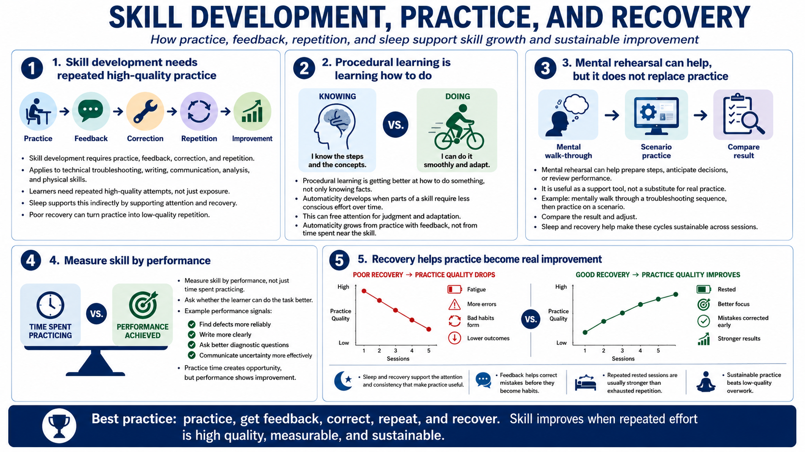

Sleep and Skill Development
Connecting to LMS... Progress: in progress

Narration
Skill development requires practice, feedback, correction, and repetition. Whether the skill is technical troubleshooting, writing, communication, analysis, or a physical action, learners need repeated high-quality attempts. Sleep supports this indirectly by supporting the attention and recovery that make repeated practice useful. Poor recovery can turn practice into low-quality repetition.
Procedural learning, at a high level, involves getting better at how to do something, not only knowing facts about it. Automaticity can develop when parts of a skill require less conscious effort over time. That can free attention for judgment and adaptation. But automaticity grows from practice with feedback, not from time spent near the skill.
Mental rehearsal can be useful in a general way when it helps someone prepare steps, anticipate decisions, or review a performance. It should not replace real practice or feedback. For example, a learner might mentally walk through a troubleshooting sequence, then practice on a scenario and compare the result. Sleep and recovery help make these cycles sustainable across sessions.
Measure skill by performance, not just time spent practicing. Did the learner find defects more reliably? Write more clearly? Ask better diagnostic questions? Communicate uncertainty more effectively? Practice time matters because it creates opportunity, but sleep, recovery, and feedback influence whether that opportunity becomes real improvement.